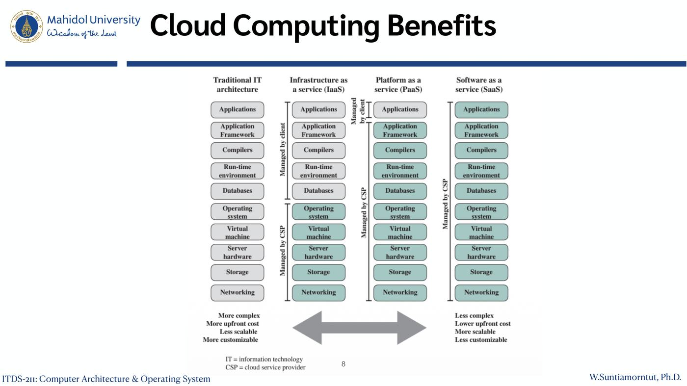
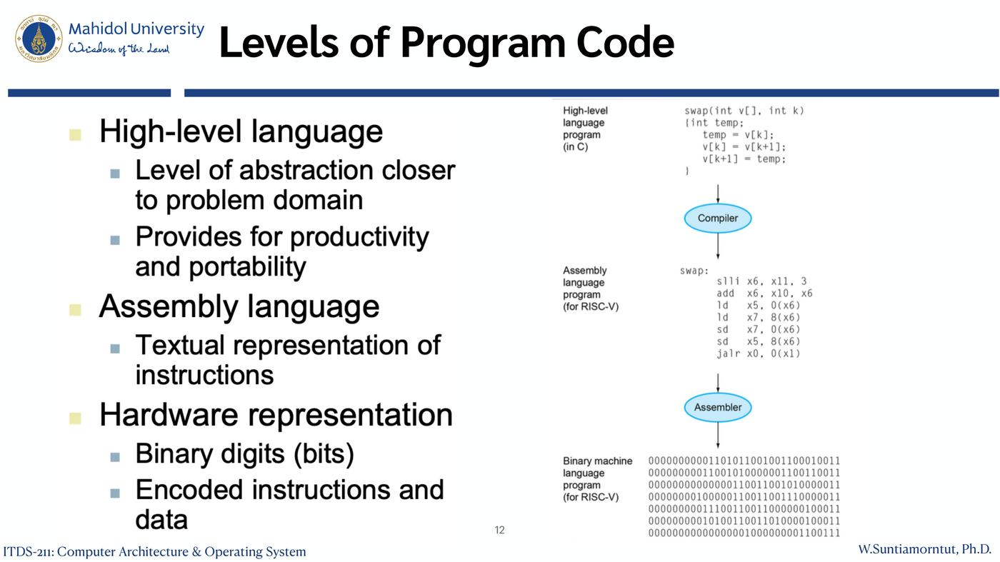
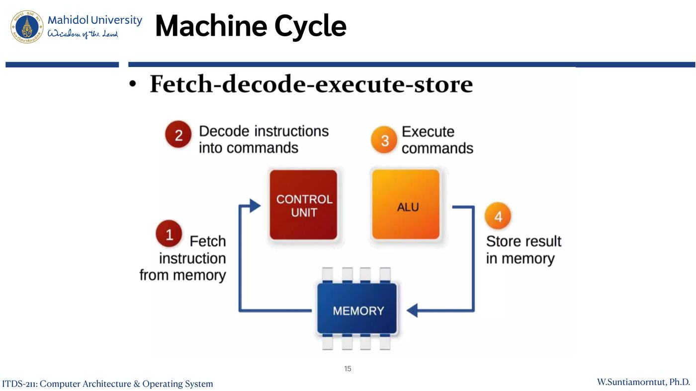
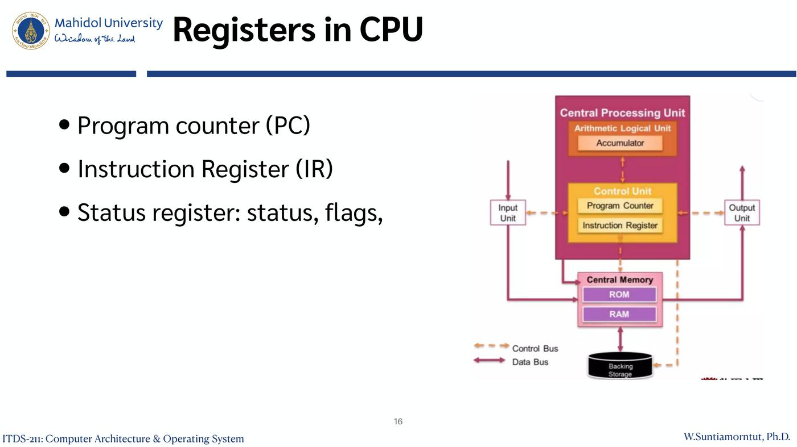
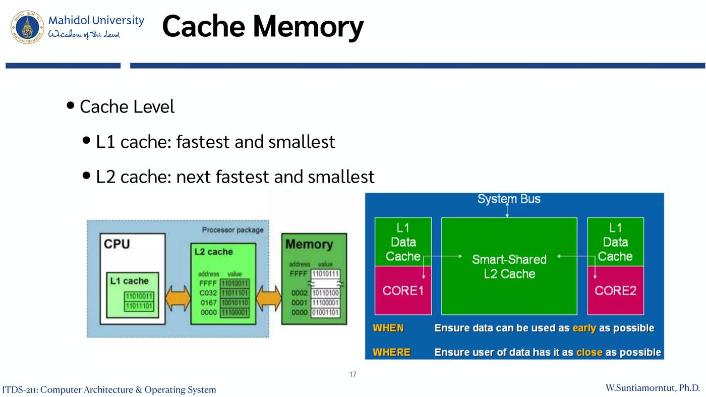
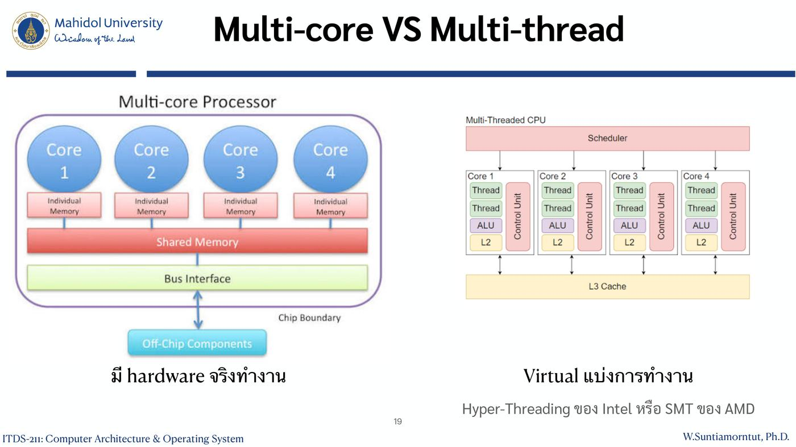
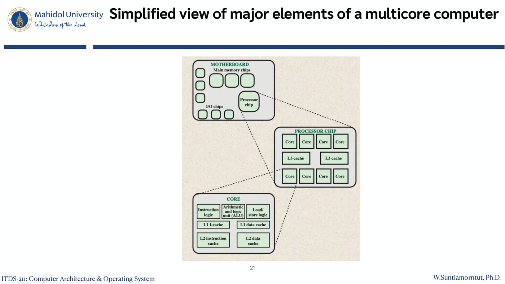
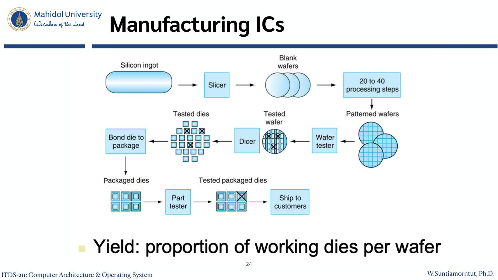
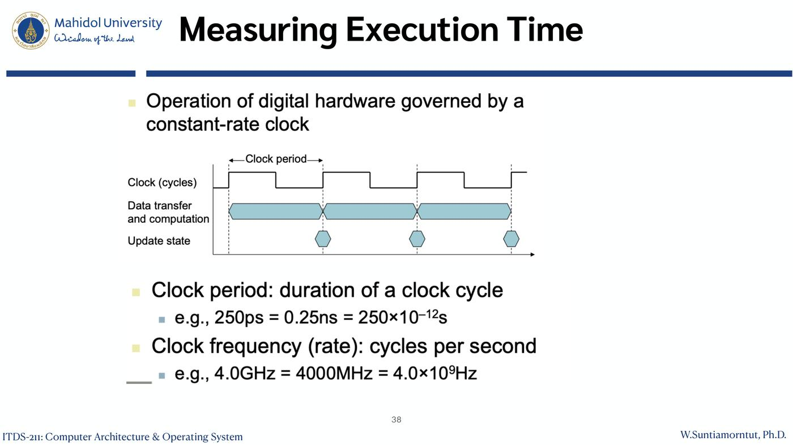

ภาพรวมบทนี้: บทแรกของครึ่ง Computer Architecture ปูพื้นว่า "architecture" กับ "organization" ต่างกันอย่างไร คอมพิวเตอร์มีกี่ประเภท มีส่วนประกอบอะไรบ้าง ข้างใน CPU มีอะไร cache คืออะไร
จากนั้นพูดถึง multi-core vs multi-thread, การผลิตชิป, RISC vs CISC, embedded system (ARM), parallelism, Flynn's Taxonomy
ปิดท้ายด้วยเรื่องที่ต้องคำนวณได้: Performance, CPU Time, CPI — ส่วนนี้มีตัวอย่างโจทย์ในสไลด์
1. Course Outline (สไลด์ 2)
หัวข้อของครึ่งเทอม: structure & architecture of computer systems, basic components, data representations, Assembly Language, memory system organization, memory hierarchy & cache, I/O systems, storage systems, computing units, multiprocessor architecture
2. Architecture vs Organization (สไลด์ 3)
ทำไมต้องแยก 2 คำนี้? เพราะสองคำนี้ตอบคนละคำถาม — architecture ตอบว่า "WHAT (ทำอะไรได้)" ส่วน organization ตอบว่า "HOW (ทำจริงอย่างไร)"
| Architecture (สถาปัตยกรรมคอมพิวเตอร์) | Organization (โครงสร้างการจัดระบบคอมพิวเตอร์) | |
|---|---|---|
| ความหมาย | คุณลักษณะของระบบที่ programmer มองเห็น และมีผลโดยตรงต่อการทำงานเชิงตรรกะของโปรแกรม | หน่วยปฏิบัติการ (operational units) และการเชื่อมต่อ ที่ทำให้ข้อกำหนดของ architecture เกิดขึ้นจริง |
| ตัวอย่าง | Instruction set, addressing modes, data types | คำสั่งถูกทำให้เกิดขึ้นจริงอย่างไรในระดับวงจร, cache, pipeline, design, bus width, clock speed |
| เกี่ยวกับใคร | ผู้ใช้ / โปรแกรมเมอร์เป็นหลัก | วิศวกรฮาร์ดแวร์ |
| คำถาม | WHAT | HOW |
💡 จำว่า: ถ้าโปรแกรมเมอร์ต้องรู้ถึงจะเขียนโปรแกรมได้ → architecture | ถ้าเป็นเรื่องข้างในที่โปรแกรมเมอร์ไม่ต้องรู้ → organization
⚠️ cache, pipeline, bus width, clock speed อยู่ฝั่ง organization ไม่ใช่ architecture
3. Defining Computer Architecture (สไลด์ 4)
| มุมมอง | ความหมาย |
|---|---|
| "Old" view | คือการออกแบบ ISA (Instruction Set Architecture) เท่านั้น ได้แก่การตัดสินใจเรื่อง registers, memory addressing, addressing modes, instruction operands, available operations, control flow instructions, instruction encoding |
| "Real" computer architecture | ทำตาม requirement เฉพาะของเครื่องเป้าหมาย, ออกแบบให้ performance สูงสุดภายใต้ข้อจำกัด: cost, power, availability และ รวม ISA, microarchitecture, hardware |
💡 มุมมองจริงกว้างกว่าแค่ ISA — รวมถึง microarchitecture และ hardware ด้วย
4. Classes of Computers (สไลด์ 5)
| ประเภท | ลักษณะตามสไลด์ |
|---|---|
| Supercomputers | ใช้กับการคำนวณทางวิทยาศาสตร์และวิศวกรรมระดับสูง • ความสามารถสูงสุด แต่เป็นสัดส่วนเล็กของตลาดคอมพิวเตอร์ทั้งหมด |
| Embedded Computers | ซ่อนอยู่เป็นส่วนประกอบของระบบอื่น • มีข้อจำกัดเข้มงวดด้าน power / performance / cost |
5. Cloud Computing (สไลด์ 6–8)
5.1 นิยาม (สไลด์ 6)
- Cloud Computing: โมเดลที่ทำให้เข้าถึงผ่านเครือข่ายได้ทุกที่ สะดวก ตามต้องการ (on demand) ไปยัง shared pool ของ computing resources ที่ปรับแต่งได้
- Cloud networking: เครือข่ายและฟังก์ชันจัดการเครือข่ายที่ต้องมี เพื่อให้ cloud computing ทำงานได้
- Cloud Storage: ประกอบด้วย database storage และ database applications ที่โฮสต์อยู่บน cloud servers ระยะไกล
5.2 Cloud Service Models (สไลด์ 7)
| Model | ให้บริการอะไร |
|---|---|
| SaaS (Software as a Service) | ให้บริการในรูป software โดยเฉพาะ application software ที่รันอยู่และเข้าถึงได้บน cloud |
| PaaS (Platform as a Service) | ให้บริการในรูป platform ที่ application ของลูกค้ารันบนนั้นได้ |
| IaaS (Infrastructure as a Service) | ให้ virtual machines และ hardware / OS แบบ abstract ซึ่งควบคุมผ่าน service API ได้ |
5.3 Cloud Computing Benefits — ใครจัดการชั้นไหน (สไลด์ 8)
มี 10 ชั้นเรียงจากบนลงล่าง: Applications, Application Framework, Compilers, Run-time environment, Databases, Operating system, Virtual machine, Server hardware, Storage, Networking
| แบบ | Client จัดการ | CSP (cloud service provider) จัดการ |
|---|---|---|
| Traditional IT | ทุกชั้น | — |
| IaaS | Applications → Databases | Operating system → Networking |
| PaaS | Applications เท่านั้น | Application Framework → Networking |
| SaaS | — | ทุกชั้น |

| ฝั่ง Traditional IT | ฝั่ง SaaS |
|---|---|
| More complex | Less complex |
| More upfront cost | Lower upfront cost |
| Less scalable | More scalable |
| More customizable | Less customizable |
💡 ยิ่งไปทาง SaaS ผู้ใช้ยิ่งจัดการน้อยลง ง่ายขึ้น ถูกลงตอนเริ่ม และขยายได้ง่าย แต่ปรับแต่งได้น้อยลง
6. Understanding Performance (สไลด์ 9)
ปัจจัยที่กำหนด performance และส่งผลต่ออะไร:
| ปัจจัย | กำหนดอะไร |
|---|---|
| Algorithm | จำนวน operations ที่ต้องทำ |
| Programming language, compiler, architecture | จำนวน machine instructions ต่อ 1 operation |
| Processor and memory system | คำสั่งทำงานเร็วแค่ไหน |
| I/O system (รวม OS) | I/O operations ทำงานเร็วแค่ไหน |
7. Eight Great Ideas in Computer Architecture (สไลด์ 10)
- Design for Moore's Law
- Use abstraction to simplify design
- Make the common case fast
- Performance via parallelism
- Performance via pipelining
- Performance via prediction
- Hierarchy of memories
- Dependability via redundancy
💡 ในสไลด์แต่ละข้อมีไอคอน: Moore's law = กราฟพุ่งขึ้น, abstraction = ภาพนามธรรม, common case fast = รถยนต์, parallelism = เครื่องบิน, pipelining = ท่อ, prediction = ลูกแก้ว, hierarchy = พีระมิด, dependability = รถบรรทุก
8. Below Your Program และ Levels of Program Code (สไลด์ 11–12)
8.1 Below Your Program (สไลด์ 11)
ชั้นซอฟต์แวร์เป็นวงซ้อนกัน: Applications software (นอกสุด) → Systems software → Hardware (ในสุด)
| ชั้น | รายละเอียด |
|---|---|
| Application software | เขียนด้วย high-level language |
| System software | Compiler: แปลโค้ด HLL เป็น machine code • Operating System: service code — จัดการ input/output, จัดการ memory และ storage, scheduling tasks & sharing resources |
| Hardware | Processor, memory, I/O controllers |
8.2 Levels of Program Code (สไลด์ 12)
| ระดับ | ลักษณะ |
|---|---|
| High-level language | ระดับ abstraction ใกล้กับโดเมนของปัญหา • ช่วยให้ productive และ portable |
| Assembly language | คำสั่งในรูปข้อความ (textual representation of instructions) |
| Hardware representation | binary digits (bits) • คำสั่งและข้อมูลที่ถูกเข้ารหัส |
ตัวอย่างในสไลด์: ฟังก์ชัน swap ภาษา C → Compiler → assembly ของ RISC-V (slli, add, ld, ld, sd, sd, jalr) → Assembler → binary machine language ของ RISC-V

💡 Compiler แปล HLL → assembly ส่วน Assembler แปล assembly → binary
9. Components of Computers (สไลด์ 13–14)
9.1 ส่วนประกอบของคอมพิวเตอร์ (สไลด์ 13)
- Input Devices
- Central Processing Unit (CPU)
- Memory (RAM)
- Storage Devices
- Motherboard
- Output Devices
- Power Supply Unit
- Graphics Processing Unit (GPU)
9.2 Inside the Processor (CPU) (สไลด์ 14)
| ส่วน | หน้าที่ |
|---|---|
| Control Unit | ควบคุมการทำงานของ CPU |
| ALU (Arithmetic and Logic Unit) | ทำหน้าที่ประมวลผลข้อมูลของคอมพิวเตอร์ |
| Registers | ที่เก็บข้อมูลภายใน CPU |
| CPU interconnection | การสื่อสารระหว่าง control unit, ALU และ registers |
10. Machine Cycle และ Registers (สไลด์ 15–16)
10.1 Machine Cycle: Fetch – Decode – Execute – Store (สไลด์ 15)
- Fetch — ดึงคำสั่งจาก memory
- Decode — แปลคำสั่งเป็น commands (ทำที่ Control Unit)
- Execute — ทำตาม commands (ทำที่ ALU)
- Store — เก็บผลลัพธ์ลง memory
แล้ววนกลับไป fetch คำสั่งถัดไป

10.2 Registers in CPU (สไลด์ 16)
- Program counter (PC)
- Instruction Register (IR)
- Status register: status, flags
ภาพในสไลด์แสดง CPU ที่มี ALU (มี Accumulator) และ Control Unit (มี Program Counter และ Instruction Register) เชื่อมกับ Input Unit, Output Unit, Central Memory (ROM, RAM) และ Backing Storage ผ่าน Control Bus (เส้นประ) และ Data Bus (เส้นทึบ)

11. Cache Memory (สไลด์ 17–18)
11.1 Cache Level (สไลด์ 17)
- L1 cache: เร็วที่สุดและเล็กที่สุด
- L2 cache: เร็วและเล็กรองลงมา
ภาพในสไลด์: CPU (มี L1 cache อยู่ข้างใน) ↔ L2 cache (ใน processor package) ↔ Memory และภาพ 2 core ที่แต่ละ core มี L1 Data Cache ของตัวเอง ใช้ Smart-Shared L2 Cache ร่วมกัน ต่อกับ System Bus
- WHEN: ทำให้ข้อมูลถูกใช้ได้ เร็วที่สุด
- WHERE: ทำให้ผู้ใช้ข้อมูลมีข้อมูลอยู่ ใกล้ที่สุด

11.2 คุณสมบัติของ Cache (สไลด์ 18)
- เป็นหน่วยความจำหลายชั้น ระหว่าง processor กับ main memory
- เล็กกว่าและเร็วกว่า main memory
- ใช้เร่งการเข้าถึง memory โดย นำข้อมูลจาก main memory ที่น่าจะถูกใช้ในอนาคตอันใกล้มาไว้ใน cache
- ได้ performance ดีขึ้นอีกเมื่อใช้ หลายระดับ โดย L1 อยู่ใกล้ core ที่สุด และ L2, L3, ... อยู่ห่างออกไปเรื่อย ๆ
💡 เปรียบเหมือนวางของที่ใช้บ่อยไว้บนโต๊ะ (cache) แทนที่จะเดินไปหยิบในตู้ (main memory) ทุกครั้ง
12. Multi-core vs Multi-thread (สไลด์ 19–20)
| Multi-core | Multi-thread | |
|---|---|---|
| ลักษณะ | มี hardware จริงทำงาน — hardware ทางกายภาพมีอยู่จริง | Virtual แบ่งการทำงาน — เสมือนจริง (เทคนิคแบ่งการทำงาน) |
| การทำงาน | รับงานชิ้นใหญ่มาประมวลผลแยกกันแบบคู่ขนาน (parallel) | จัดการงานเบื้องหลังและแบ่งงานย่อยป้อนให้ core |
| เปรียบเทียบในสไลด์ | Core = จำนวนเชฟทำอาหารในครัว | จำนวนแขนของเชฟแต่ละคน |
| ตัวอย่างชื่อเทคโนโลยี | — | Hyper-Threading ของ Intel หรือ SMT ของ AMD |
ภาพในสไลด์ 19:
- Multi-core Processor: 4 cores แต่ละ core มี Individual Memory → ใช้ Shared Memory ร่วมกัน → Bus Interface → Off-Chip Components (นอก Chip Boundary)
- Multi-Threaded CPU: Scheduler ด้านบนแจกงานให้ 4 cores แต่ละ core มี 2 Threads, ALU, L2, Control Unit และใช้ L3 Cache ร่วมกัน

13. ภาพตัวอย่างฮาร์ดแวร์จริง (สไลด์ 21–23)
13.1 Simplified view of a multicore computer (สไลด์ 21)
ซูมเข้าเป็น 3 ระดับ:
- MOTHERBOARD: มี Main memory chips, I/O chips, Processor chip
- PROCESSOR CHIP: มี 8 cores และ L3 cache 2 ก้อน
- CORE: มี Instruction logic, ALU, Load/store logic, L1 I-cache, L1 data cache, L2 instruction cache, L2 data cache

13.2 Motherboard with Two Intel Quad-Core Xeon Processors (สไลด์ 22)
ส่วนที่ชี้ในภาพ: 2x Quad-Core Intel Xeon Processors with Integrated Memory Controllers, Six Channel DDR3-1333 Memory Interfaces up to 48GB, Intel 3420 Chipset, Serial ATA/300 (SATA) Interfaces, 2x USB 2.0 Internal, 2x USB 2.0 External, VGA Video Output, BIOS, 2x Ethernet Ports 10/100/1000Base-T, Ethernet Controller, Clock, PCI Express Connector A และ B, Power & Backplane I/O Connector C
13.3 Inside the Processor: Apple A5 (สไลด์ 23)
ภาพ die ของชิป Apple A5 แสดงส่วนต่าง ๆ: Processor Data Path 1 และ 2, Arm Core (2 ตัว), I/O, GPIO, USB, DDR SDRAM Interface, Digital Logic Blocks, Video DAC, Audio, WiFi
14. Manufacturing ICs (สไลด์ 24–25)
14.1 ขั้นตอนการผลิต IC (สไลด์ 24)
- Silicon ingot → Slicer → ได้ Blank wafers
- ผ่าน 20 to 40 processing steps → ได้ Patterned wafers
- Wafer tester → ได้ Tested wafer (มีตัวที่เสียถูกกากบาท)
- Dicer (ตัดแยก) → ได้ Tested dies
- Bond die to package → ได้ Packaged dies
- Part tester → ได้ Tested packaged dies
- Ship to customers
- Yield: สัดส่วนของ die ที่ใช้งานได้ต่อ 1 wafer (proportion of working dies per wafer)

14.2 Intel Core i7 Wafer (สไลด์ 25)
- 300mm wafer, 280 chips, 32nm technology
- แต่ละชิปขนาด 20.7 x 10.5 mm
15. Single Processor Performance (สไลด์ 26)
กราฟ performance ของ processor ตัวเดียวตั้งแต่ปี 1978–2018 (แกน y แบบ log) อัตราการเพิ่มขึ้นแต่ละช่วง:
| ช่วงปี (ตามกราฟ) | อัตราเพิ่ม |
|---|---|
| 1978–1986 | 25%/year |
| 1986–2003 | 52%/year |
| 2003–2011 | 23%/year |
| 2011–2015 | 12%/year |
| 2015–2018 | 3.5%/year |
จุดเริ่มคือ VAX-11/780 5 MHz (ค่า 1) และจุดท้ายคือ Intel Core i7 4 cores 4.2 GHz (Boost to 4.5 GHz) ค่า 49,935
💡 สิ่งที่อ่านได้จากกราฟ: อัตราการเพิ่ม performance ของ processor ตัวเดียวช้าลงมากในช่วงหลัง
16. RISC vs CISC Architecture (สไลด์ 27)
- RISC = Reduced Instruction Set Computing
- CISC = Complex Instruction Set Computing
| RISC (ภาพซ้าย) | CISC (ภาพขวา) | |
|---|---|---|
| ลำดับ | PC → Program Memory → IR → Decoder → CW → Data path | PC → Program Memory → mPC → mPM → CW → Data path |
| Data Memory | ส่งเข้า Data path | ส่งเข้า Data path |
- หมายเหตุในสไลด์: mPC = microprogram counter, mPM = Microprocessor Mode
⚠️ ความต่างที่เห็นในภาพ: RISC ใช้ IR + Decoder ส่วน CISC ใช้ mPC + mPM แทน
17. Embedded Systems และ ARM (สไลด์ 28–31)
17.1 Embedded Systems (สไลด์ 28)
- การใช้อิเล็กทรอนิกส์และซอฟต์แวร์ ภายในผลิตภัณฑ์
- ทุกปีมีการผลิตคอมพิวเตอร์ หลายพันล้านระบบ ที่ฝังอยู่ในอุปกรณ์ที่ใหญ่กว่า
- อุปกรณ์จำนวนมากที่ใช้ไฟฟ้ามี embedded computing system อยู่
- มักผูกแน่นกับสภาพแวดล้อม (tightly coupled to their environment)
- มี real-time constraints
- มีหลายกิจกรรมที่ต้องจัดการพร้อมกัน ทำให้ real-time constraints ซับซ้อนขึ้น
17.2 ARM (สไลด์ 29)
- เป็น processor architecture ที่พัฒนามาจาก หลักการออกแบบแบบ RISC และใช้ใน embedded systems
- เป็นตระกูล microprocessors และ microcontrollers แบบ RISC ออกแบบโดย ARM Holdings, Cambridge, England
- ชิปเป็น processor ความเร็วสูง ที่ขึ้นชื่อเรื่อง die size เล็ก และ ใช้พลังงานต่ำ
- น่าจะเป็น embedded processor architecture ที่ใช้มากที่สุด และเป็น processor architecture ที่ใช้มากที่สุดในโลก
- ชื่อย่อจาก Acorn RISC Machine / Advanced RISC Machine
17.3 ARM Products (สไลด์ 30)
- Cortex-A / Cortex-A50
- Cortex-R
- Cortex-M: Cortex-M0, Cortex-M0+, Cortex-M3, Cortex-M4
17.4 Microcontroller chip based on Cortex-M3 (สไลด์ 31)
- ARM Cortex-M series: จัดการ interrupt เร็วและ deterministic สูง, ใช้พลังงานต่ำ
- Cortex-M3: สำหรับ application 16, 32-bit มี debug และ trace features ให้นักพัฒนาซอฟต์แวร์พัฒนาแอปได้เร็ว
18. Parallelism และ Flynn's Taxonomy (สไลด์ 32–33)
18.1 Parallelism (สไลด์ 32)
| Classes of parallelism in applications | Classes of architectural parallelism |
|---|---|
| Data-Level Parallelism (DLP) | Instruction-Level Parallelism (ILP) |
| Task-Level Parallelism (TLP) | Vector architectures / Graphic Processor Units (GPUs) |
| Thread-Level Parallelism | |
| Request-Level Parallelism |
18.2 Flynn's Taxonomy (สไลด์ 33)
| ชื่อ | ความหมาย | ตัวอย่าง / หมายเหตุในสไลด์ |
|---|---|---|
| SISD | Single instruction stream, single data stream | — |
| SIMD | Single instruction stream, multiple data streams | Vector architectures, Multimedia extensions, Graphics processor units |
| MISD | Multiple instruction streams, single data stream | No commercial implementation |
| MIMD | Multiple instruction streams, multiple data streams | Tightly-coupled MIMD, Loosely-coupled MIMD |
⚠️ MISD คือแบบเดียวที่สไลด์ระบุว่า "ไม่มีการนำไปใช้เชิงพาณิชย์"
19. System Level Architecture Patterns (สไลด์ 34)
| Pattern | ความหมาย |
|---|---|
| Monolithic | ระบบเดียวรวมเป็นหนึ่ง (single unified system) |
| Client-server | แบ่งเป็นเครื่องที่ร้องขอ (requesting) กับเครื่องที่ให้บริการ (serving) |
| Distributed systems | การคำนวณกระจายไปบนเครื่องหลายเครื่องที่เชื่อมเครือข่าย |
| Micro services | services แบบโมดูล deploy แยกกันได้อิสระ (เป็น software architecture pattern มากกว่า) |
20. Performance (สไลด์ 35–42)
20.1 Relative Performance (สไลด์ 36)
Performance = 1 / Execution Time
"X is n time faster than Y":
Performance_X / Performance_Y = Execution time_Y / Execution time_X = n
ตัวอย่างในสไลด์: โปรแกรมใช้เวลา 10s บน A และ 15s บน B
- Execution Time_B / Execution Time_A = 15s / 10s = 1.5
- ดังนั้น A เร็วกว่า B 1.5 เท่า
⚠️ performance ยิ่งสูงยิ่งดี แต่ execution time ยิ่งต่ำยิ่งดี — ตอนหารต้องเอา เวลาของตัวที่ช้า หารด้วยเวลาของตัวที่เร็ว
20.2 Measuring Execution Time (สไลด์ 37)
| Elapsed time | CPU time | |
|---|---|---|
| ความหมาย | เวลาตอบสนองทั้งหมด รวมทุกอย่าง: processing, I/O, OS overhead, idle time | เวลาที่ใช้ประมวลผลงานหนึ่ง ๆ — ไม่นับ เวลา I/O และส่วนของงานอื่น |
| ใช้วัด | system performance | ประกอบด้วย user CPU time และ system CPU time |
| หมายเหตุ | โปรแกรมต่างกันได้รับผลจาก CPU และ system performance ต่างกัน |
20.3 Clock (สไลด์ 38)
- การทำงานของ digital hardware ถูกควบคุมด้วย clock อัตราคงที่
- ในแต่ละรอบ clock มี data transfer and computation แล้ว update state ที่ขอบของรอบ
- Clock period: ระยะเวลาของ 1 clock cycle เช่น 250ps = 0.25ns = 250×10⁻¹²s
- Clock frequency (rate): จำนวน cycles ต่อวินาที เช่น 4.0GHz = 4000MHz = 4.0×10⁹Hz

20.4 CPU Time (สไลด์ 39)
CPU Time = CPU Clock Cycles × Clock Cycle Time
= CPU Clock Cycles / Clock Rate
Performance ดีขึ้นได้โดย:
- ลดจำนวน clock cycles
- เพิ่ม clock rate
- นักออกแบบ hardware มักต้อง trade off ระหว่าง clock rate กับ cycle count
20.5 CPU Time Example (สไลด์ 40)
โจทย์: Computer A: clock 2GHz, CPU time 10s | ออกแบบ Computer B ให้ได้ CPU time 6s โดยทำ clock เร็วขึ้นได้ แต่ทำให้ใช้ clock cycles เป็น 1.2 เท่า → clock ของ B ต้องเร็วเท่าไร?
วิธีทำ (ตามสไลด์):
- Clock Rate_B = Clock Cycles_B / CPU Time_B = (1.2 × Clock Cycles_A) / 6s
- Clock Cycles_A = CPU Time_A × Clock Rate_A = 10s × 2GHz = 20 × 10⁹
- Clock Rate_B = (1.2 × 20 × 10⁹) / 6s = (24 × 10⁹) / 6s = 4GHz
20.6 Instruction Count and CPI (สไลด์ 41)
Clock Cycles = Instruction Count × Cycles per Instruction (CPI)
CPU Time = Instruction Count × CPI × Clock Cycle Time
= (Instruction Count × CPI) / Clock Rate
| ตัวแปร | ถูกกำหนดโดย |
|---|---|
| Instruction Count ของโปรแกรม | program, ISA และ compiler |
| CPI (average cycles per instruction) | CPU hardware • ถ้าคำสั่งแต่ละแบบมี CPI ต่างกัน ค่า CPI เฉลี่ยจะขึ้นกับ instruction mix |
20.7 CPI Example (สไลด์ 42)
โจทย์: Computer A: Cycle Time = 250ps, CPI = 2.0 | Computer B: Cycle Time = 500ps, CPI = 1.2 | ISA เดียวกัน → ตัวไหนเร็วกว่า และเร็วกว่าเท่าไร?
วิธีทำ (ตามสไลด์):
- CPU Time_A = I × 2.0 × 250ps = I × 500ps ← A เร็วกว่า
- CPU Time_B = I × 1.2 × 500ps = I × 600ps
- CPU Time_B / CPU Time_A = (I × 600ps) / (I × 500ps) = 1.2 ← เร็วกว่าเท่านี้
💡 ISA เดียวกัน = instruction count (I) เท่ากัน จึงตัด I ทิ้งได้ตอนหาร
คำศัพท์สำคัญ
| คำศัพท์ | ความหมาย | จำง่าย ๆ ว่า |
|---|---|---|
| Architecture | คุณลักษณะที่ programmer มองเห็น (ISA, addressing modes, data types) | WHAT |
| Organization | หน่วยทำงานและการเชื่อมต่อที่ทำให้ architecture เกิดขึ้นจริง (cache, pipeline, bus width, clock speed) | HOW |
| ISA | Instruction Set Architecture | มุมมอง "old" ของ CA |
| SaaS / PaaS / IaaS | ให้บริการ software / platform / infrastructure บน cloud | SaaS ผู้ใช้จัดการน้อยสุด |
| CSP | Cloud Service Provider | ผู้ให้บริการ cloud |
| Control Unit | ควบคุมการทำงานของ CPU | ทำขั้น Decode |
| ALU | ประมวลผลข้อมูล | ทำขั้น Execute |
| PC / IR | Program Counter / Instruction Register | register ใน Control Unit |
| Cache | หน่วยความจำเล็กและเร็ว ระหว่าง processor กับ main memory | L1 เร็วสุด เล็กสุด |
| Multi-core | มีหลาย core ที่เป็น hardware จริง | จำนวนเชฟ |
| Multi-thread | แบ่งงานแบบเสมือน (Hyper-Threading / SMT) | จำนวนแขนเชฟ |
| Yield | สัดส่วน die ที่ใช้งานได้ต่อ wafer | |
| RISC / CISC | Reduced / Complex Instruction Set Computing | ARM มาจาก RISC |
| SISD / SIMD / MISD / MIMD | Flynn's Taxonomy | MISD ไม่มีใช้เชิงพาณิชย์ |
| Elapsed time | เวลาทั้งหมดรวม I/O, OS overhead, idle | วัด system performance |
| CPU time | เวลาที่ CPU ใช้กับงานนั้นจริง ๆ (user + system) | ไม่นับ I/O |
| Clock period / Clock rate | ระยะเวลา 1 cycle / จำนวน cycle ต่อวินาที | เป็นส่วนกลับกัน |
| CPI | Cycles per Instruction เฉลี่ย | ขึ้นกับ hardware และ instruction mix |
สรุปท้ายบท / จุดที่มักออกสอบ
- Architecture = WHAT (programmer เห็น: ISA, addressing modes, data types) | Organization = HOW (cache, pipeline, bus width, clock speed)
- "Real" computer architecture = ISA + microarchitecture + hardware ออกแบบให้ performance สูงสุดภายใต้ cost, power, availability
- IaaS: CSP จัดการ OS ลงไป | PaaS: client จัดการแค่ Applications | SaaS: CSP จัดการทั้งหมด
- Eight Great Ideas: Moore's Law, abstraction, common case fast, parallelism, pipelining, prediction, hierarchy of memories, dependability via redundancy
- Machine cycle: Fetch → Decode (Control Unit) → Execute (ALU) → Store
- Cache: L1 เร็วสุดและเล็กสุด อยู่ใกล้ core ที่สุด
- Multi-core = hardware จริง (เชฟ) | Multi-thread = เสมือน (แขนเชฟ), Hyper-Threading (Intel) / SMT (AMD)
- Yield = working dies / wafer | Core i7 wafer: 300mm, 280 chips, 32nm, 20.7 × 10.5 mm
- Flynn: SISD, SIMD (vector, multimedia ext., GPU), MISD (ไม่มีเชิงพาณิชย์), MIMD (tightly / loosely coupled)
- สูตรที่ต้องจำ:
- Performance = 1 / Execution Time
- n = Execution time_Y / Execution time_X (X เร็วกว่า Y n เท่า)
- CPU Time = Clock Cycles × Clock Cycle Time = Clock Cycles / Clock Rate
- Clock Cycles = Instruction Count × CPI
- CPU Time = IC × CPI × Cycle Time = IC × CPI / Clock Rate
- โจทย์ในสไลด์: A=10s, B=15s → A เร็วกว่า 1.5 เท่า | Computer B ต้องการ clock 4GHz | CPI example → A เร็วกว่า B 1.2 เท่า